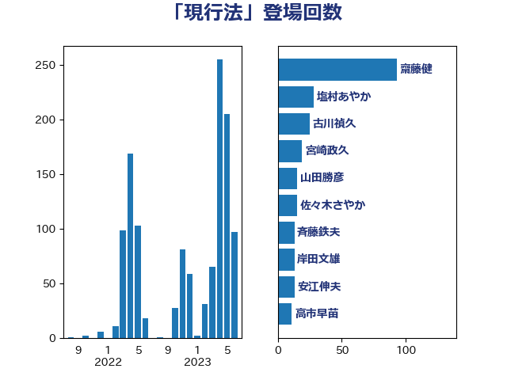

単語「現行法」

| 齋藤健 | 自由民主党 | 93 回 |
| 塩村あやか | 立憲民主党 | 28 回 |
| 古川禎久 | 自由民主党 | 25 回 |
| 宮崎政久 | 自由民主党 | 19 回 |
| 山田勝彦 | 立憲民主党 | 15 回 |
| 佐々木さやか | 公明党 | 15 回 |
| 斉藤鉄夫 | 公明党 | 13 回 |
| 岸田文雄 | 自由民主党 | 13 回 |
| 安江伸夫 | 公明党 | 13 回 |
| 高市早苗 | 自由民主党 | 11 回 |
| 葉梨康弘 | 自由民主党 | 8 回 |
| 松本剛明 | 自由民主党 | 8 回 |
| 本村伸子 | 日本共産党 | 8 回 |
| 小沼巧 | 立憲民主党 | 8 回 |
| 奥野総一郎 | 立憲民主党 | 8 回 |
| 階猛 | 立憲民主党 | 7 回 |
| 西村智奈美 | 立憲民主党 | 7 回 |
| 笠井亮 | 日本共産党 | 7 回 |
| 永岡桂子 | 自由民主党 | 7 回 |
| 新藤義孝 | 自由民主党 | 7 回 |
| 國重徹 | 公明党 | 7 回 |
| 和田有一朗 | 日本維新の会 | 7 回 |
| 吉田統彦 | 立憲民主党 | 7 回 |
| 仁比聡平 | 日本共産党 | 7 回 |
| 野村哲郎 | 自由民主党 | 6 回 |
| 逢沢一郎 | 自由民主党 | 6 回 |
| 辻元清美 | 立憲民主党 | 6 回 |
| 渡辺創 | 立憲民主党 | 6 回 |
| 河野太郎 | 自由民主党 | 6 回 |
| 沢田良 | 日本維新の会 | 6 回 |
| 庄子賢一 | 公明党 | 6 回 |
| 宮本岳志 | 日本共産党 | 6 回 |
| 守島正 | 日本維新の会 | 6 回 |
| 赤嶺政賢 | 日本共産党 | 5 回 |
| 藤原崇 | 自由民主党 | 5 回 |
| 舩後靖彦 | れいわ新選組 | 5 回 |
| 石原宏高 | 自由民主党 | 5 回 |
| 玉木雄一郎 | 国民民主党 | 5 回 |
| 津島淳 | 自由民主党 | 5 回 |
| 山下貴司 | 自由民主党 | 5 回 |
| 宮本徹 | 日本共産党 | 5 回 |
| 大口善徳 | 公明党 | 5 回 |
| 塩川鉄也 | 日本共産党 | 5 回 |
| 堤かなめ | 立憲民主党 | 5 回 |
| 坂本祐之輔 | 立憲民主党 | 5 回 |
| 吉田宣弘 | 公明党 | 5 回 |
| 加田裕之 | 自由民主党 | 5 回 |
| 伊藤岳 | 日本共産党 | 5 回 |
| 高橋千鶴子 | 日本共産党 | 4 回 |
| 谷合正明 | 公明党 | 4 回 |
| 若宮健嗣 | 自由民主党 | 4 回 |
| 窪田哲也 | 公明党 | 4 回 |
| 熊田裕通 | 自由民主党 | 4 回 |
| 梅村みずほ | 日本維新の会 | 4 回 |
| 日下正喜 | 公明党 | 4 回 |
| 新垣邦男 | 立憲民主党 | 4 回 |
| 川田龍平 | 立憲民主党 | 4 回 |
| 山添拓 | 日本共産党 | 4 回 |
| 古屋範子 | 公明党 | 4 回 |
| 友納理緒 | 自由民主党 | 4 回 |
| 住吉寛紀 | 日本維新の会 | 4 回 |
| 伊波洋一 | 無所属 | 4 回 |
| 中川康洋 | 公明党 | 4 回 |
| 音喜多駿 | 日本維新の会 | 3 回 |
| 長峯誠 | 自由民主党 | 3 回 |
| 金子恭之 | 自由民主党 | 3 回 |
| 赤木正幸 | 日本維新の会 | 3 回 |
| 藤井比早之 | 自由民主党 | 3 回 |
| 福重隆浩 | 公明党 | 3 回 |
| 福島みずほ | 社会民主党 | 3 回 |
| 石橋通宏 | 立憲民主党 | 3 回 |
| 田村貴昭 | 日本共産党 | 3 回 |
| 田中健 | 国民民主党 | 3 回 |
| 牧山ひろえ | 立憲民主党 | 3 回 |
| 漆間譲司 | 日本維新の会 | 3 回 |
| 清水真人 | 自由民主党 | 3 回 |
| 池下卓 | 日本維新の会 | 3 回 |
| 水野素子 | 立憲民主党 | 3 回 |
| 武部新 | 自由民主党 | 3 回 |
| 梅村聡 | 日本維新の会 | 3 回 |
| 柚木道義 | 立憲民主党 | 3 回 |
| 松沢成文 | 日本維新の会 | 3 回 |
| 平林晃 | 公明党 | 3 回 |
| 平口洋 | 自由民主党 | 3 回 |
| 岩谷良平 | 日本維新の会 | 3 回 |
| 山井和則 | 立憲民主党 | 3 回 |
| 小倉將信 | 自由民主党 | 3 回 |
| 寺田稔 | 自由民主党 | 3 回 |
| 寺田学 | 立憲民主党 | 3 回 |
| 城井崇 | 立憲民主党 | 3 回 |
| 加藤勝信 | 自由民主党 | 3 回 |
| 高橋光男 | 公明党 | 2 回 |
| 高木宏壽 | 自由民主党 | 2 回 |
| 馬淵澄夫 | 立憲民主党 | 2 回 |
| 馬場伸幸 | 日本維新の会 | 2 回 |
| 青木愛 | 立憲民主党 | 2 回 |
| 長浜博行 | 無所属 | 2 回 |
| 長島昭久 | 自由民主党 | 2 回 |
| 鈴木俊一 | 自由民主党 | 2 回 |
| 逢坂誠二 | 立憲民主党 | 2 回 |
| 磯崎仁彦 | 自由民主党 | 2 回 |
| 田村智子 | 日本共産党 | 2 回 |
| 田村まみ | 国民民主党 | 2 回 |
| 田中昌史 | 自由民主党 | 2 回 |
| 浜田靖一 | 自由民主党 | 2 回 |
| 池畑浩太朗 | 日本維新の会 | 2 回 |
| 橘慶一郎 | 自由民主党 | 2 回 |
| 柴山昌彦 | 自由民主党 | 2 回 |
| 枝野幸男 | 立憲民主党 | 2 回 |
| 村田享子 | 立憲民主党 | 2 回 |
| 徳永久志 | 無所属 | 2 回 |
| 後藤茂之 | 自由民主党 | 2 回 |
| 広瀬めぐみ | 自由民主党 | 2 回 |
| 川崎ひでと | 自由民主党 | 2 回 |
| 岡田直樹 | 自由民主党 | 2 回 |
| 山口壯 | 自由民主党 | 2 回 |
| 小林一大 | 自由民主党 | 2 回 |
| 宮崎勝 | 公明党 | 2 回 |
| 天畠大輔 | れいわ新選組 | 2 回 |
| 大島敦 | 立憲民主党 | 2 回 |
| 塩崎彰久 | 自由民主党 | 2 回 |
| 国定勇人 | 自由民主党 | 2 回 |
| 吉田はるみ | 立憲民主党 | 2 回 |
| 吉川元 | 立憲民主党 | 2 回 |
| 古賀千景 | 立憲民主党 | 2 回 |
| 勝俣孝明 | 自由民主党 | 2 回 |
| 前川清成 | 日本維新の会 | 2 回 |
| 倉林明子 | 日本共産党 | 2 回 |
| 伊藤孝恵 | 国民民主党 | 2 回 |
| 上田勇 | 公明党 | 2 回 |
| 三浦信祐 | 公明党 | 2 回 |
| 三木圭恵 | 日本維新の会 | 2 回 |
| 高良鉄美 | 無所属 | 1 回 |
| 高橋英明 | 日本維新の会 | 1 回 |
| 高橋克法 | 自由民主党 | 1 回 |
| 高木陽介 | 公明党 | 1 回 |
| 高木かおり | 日本維新の会 | 1 回 |
| 阿部弘樹 | 日本維新の会 | 1 回 |
| 阿部司 | 日本維新の会 | 1 回 |
| 門山宏哲 | 自由民主党 | 1 回 |
| 長谷川淳二 | 自由民主党 | 1 回 |
| 長谷川岳 | 自由民主党 | 1 回 |
| 長妻昭 | 立憲民主党 | 1 回 |
| 鎌田さゆり | 立憲民主党 | 1 回 |
| 鈴木隼人 | 自由民主党 | 1 回 |
| 鈴木貴子 | 自由民主党 | 1 回 |
| 鈴木宗男 | 日本維新の会 | 1 回 |
| 金子恵美 | 立憲民主党 | 1 回 |
| 野中厚 | 自由民主党 | 1 回 |
| 輿水恵一 | 公明党 | 1 回 |
| 足立康史 | 日本維新の会 | 1 回 |
| 赤池誠章 | 自由民主党 | 1 回 |
| 谷川とむ | 自由民主党 | 1 回 |
| 西村康稔 | 自由民主党 | 1 回 |
| 落合貴之 | 立憲民主党 | 1 回 |
| 舟山康江 | 国民民主党 | 1 回 |
| 美延映夫 | 日本維新の会 | 1 回 |
| 緒方林太郎 | 無所属 | 1 回 |
| 簗和生 | 自由民主党 | 1 回 |
| 稲田朋美 | 自由民主党 | 1 回 |
| 神谷宗幣 | 参政党 | 1 回 |
| 石田昌宏 | 自由民主党 | 1 回 |
| 石川博崇 | 公明党 | 1 回 |
| 石垣のりこ | 立憲民主党 | 1 回 |
| 石井苗子 | 日本維新の会 | 1 回 |
| 石井正弘 | 自由民主党 | 1 回 |
| 矢倉克夫 | 公明党 | 1 回 |
| 田野瀬太道 | 無所属 | 1 回 |
| 田所嘉徳 | 自由民主党 | 1 回 |
| 渡辺周 | 立憲民主党 | 1 回 |
| 清水貴之 | 日本維新の会 | 1 回 |
| 櫛渕万里 | れいわ新選組 | 1 回 |
| 横沢高徳 | 立憲民主党 | 1 回 |
| 榛葉賀津也 | 国民民主党 | 1 回 |
| 森本真治 | 立憲民主党 | 1 回 |
| 森屋隆 | 立憲民主党 | 1 回 |
| 梶原大介 | 自由民主党 | 1 回 |
| 梅谷守 | 立憲民主党 | 1 回 |
| 柴田巧 | 日本維新の会 | 1 回 |
| 柳本顕 | 自由民主党 | 1 回 |
| 林芳正 | 自由民主党 | 1 回 |
| 松野博一 | 自由民主党 | 1 回 |
| 東国幹 | 自由民主党 | 1 回 |
| 本田太郎 | 自由民主党 | 1 回 |
| 末次精一 | 立憲民主党 | 1 回 |
| 木原誠二 | 自由民主党 | 1 回 |
| 早稲田ゆき | 立憲民主党 | 1 回 |
| 斎藤嘉隆 | 立憲民主党 | 1 回 |
| 打越さく良 | 立憲民主党 | 1 回 |
| 川合孝典 | 国民民主党 | 1 回 |
| 島村大 | 自由民主党 | 1 回 |
| 岩渕友 | 日本共産党 | 1 回 |
| 岡本あき子 | 立憲民主党 | 1 回 |
| 山谷えり子 | 自由民主党 | 1 回 |
| 山本剛正 | 日本維新の会 | 1 回 |
| 山下雄平 | 自由民主党 | 1 回 |
| 小林鷹之 | 自由民主党 | 1 回 |
| 小宮山泰子 | 立憲民主党 | 1 回 |
| 寺田静 | 無所属 | 1 回 |
| 宮路拓馬 | 自由民主党 | 1 回 |
| 宗清皇一 | 自由民主党 | 1 回 |
| 大石あきこ | れいわ新選組 | 1 回 |
| 大島九州男 | れいわ新選組 | 1 回 |
| 大家敏志 | 自由民主党 | 1 回 |
| 塩田博昭 | 公明党 | 1 回 |
| 堀内詔子 | 自由民主党 | 1 回 |
| 和田義明 | 自由民主党 | 1 回 |
| 吉田とも代 | 日本維新の会 | 1 回 |
| 北側一雄 | 公明党 | 1 回 |
| 勝目康 | 自由民主党 | 1 回 |
| 伊東信久 | 日本維新の会 | 1 回 |
| 今枝宗一郎 | 自由民主党 | 1 回 |
| 五十嵐清 | 自由民主党 | 1 回 |
| 中川貴元 | 自由民主党 | 1 回 |
| 中川宏昌 | 公明党 | 1 回 |
| 一谷勇一郎 | 日本維新の会 | 1 回 |